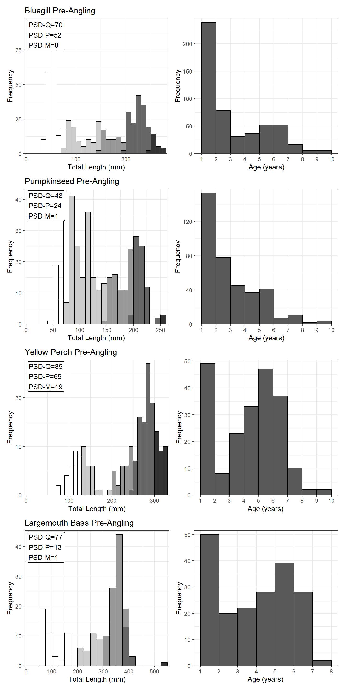

The effect of angling on fish population size structure is dependent on a myriad of factors, such as population abundance, the amount of angling effort, the size of the water body, and even differential vulnerability of different fish species. The opportunity to study unexploited populations can be extremely valuable, including situations where subsequent angler harvest is then assessed. Data sets for unexploited populations tend to be relatively rare. Information on unexploited populations can provide our profession with valuable examples of just what is possible when a population is not exploited. That way, realistic (i.e., feasible) management objectives might be set for various harvest regulations that fishery biologist might select. In this case study, you will explore the effects of angling on a previously unexploited fish community in a small Wisconsin Lake.
Mid Lake (4.7 ha; map) is one of a series of small lakes in Hartman Creek State Park, Wisconsin. The maximum lake depth is 1.8 m and given the relatively clear water that allowed light penetration to the entire lake bottom, submergent vegetation growth was abundant throughout the lake. The fish community in Mid Lake included Bluegill (Lepomis macrochirus), Largemouth Bass (Micropterus salmoides), Northern Pike (Esox lucius), Pumpkinseed (Lepomis gibbosus), and Yellow Perch (Perca flavescens).
The lake was closed to all fishing from 1938 to 1976. On 1-May-1976, anglers were permitted to harvest any fish species, with seasons extending from early May through February. There was no length limits on harvested fish, and daily creel limits were liberal (five per day for Largemouth Bass, five per day for Northern Pike, and 50 per day for panfish). Random stratified creel surveys indicated angling effort of 230 hours/ha in 1976 and 62 hours/ha in 1979.
Fish populations were surveyed over a 6-year period. Samples in 1974-1976 represented unfished populations (i.e,. “pre-angling”“), whereas samples in 1977-1979 were from fished populations (i.e.,”post-angling”“). Electrofishing samples were collected every spring and fyke nets were set in 1976 and 1979. Electrofishing was carried out at night with a 230-volt direct- or alternating-current shocker with the entire perimeter of the lake traversed each time. The six fyke nets (856 to 1,000 net-hours in each sampling year) were of 5-cm stretched mesh with leads of 12 to 18 m. Captured fish were measured (total length (TL), mm), weighed (g), and finclipped; scale samples were collected, and the fish were released. Ages were determined for Bluegills, Pumpkinseeds, Yellow Perch, and Largemouth Bass from 1974 through 1978 and from Yellow Perch in 1979.
Length- and age-frequency plots, as well as proportional size distribution of quality- (PSD), preferred- (PSD-P), and memorable-length fish, for Bluegill, Pumpkinseed, Yellow Perch, and Largemouth Bass from the PRE-ANGLING period are shown below.

Use these results to answer the following questions.